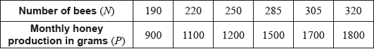
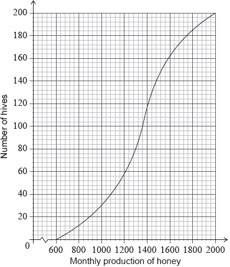
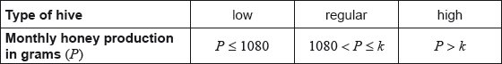

Adam is a beekeeper who collected data about monthly honey production in his bee hives. The data for six of his hives is shown in the following table.

The relationship between the variables is modelled by the regression line with equation .
Adam has 200 hives in total. He collects data on the monthly honey production of all the hives. This data is shown in the following cumulative frequency graph.

Adam’s hives are labelled as low, regular or high production, as defined in the following table.

Adam knows that 128 of his hives have a regular production.
Write down the value of and of .
Use this regression line to estimate the monthly honey production from a hive that has 270 bees.
Write down the number of low production hives.
Find the value of ;
Find the number of hives that have a high production.
Adam decides to increase the number of bees in each low production hive. Research suggests that there is a probability of 0.75 that a low production hive becomes a regular production hive. Calculate the probability that 30 low production hives become regular production hives.